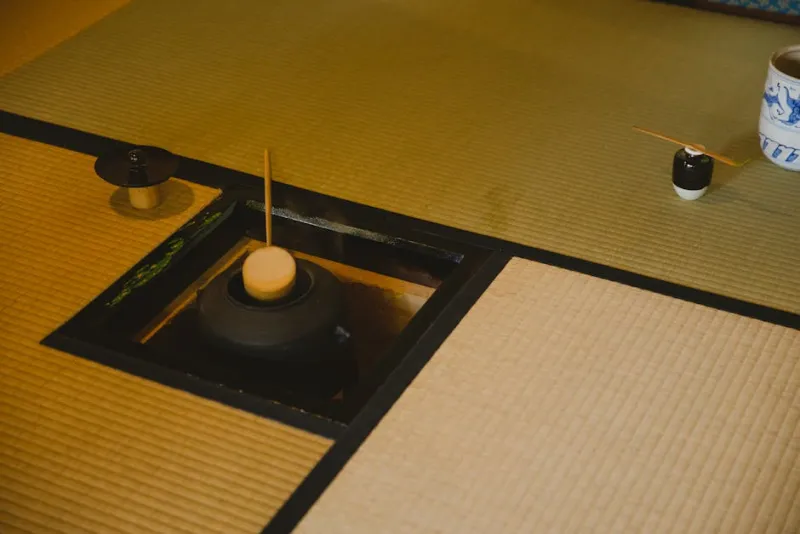

The Japanese tea ceremony is a choreography of presence. Every movement has a name, a reason, and a depth that practice slowly reveals. Here is how the ceremony unfolds.
What follows is not a recipe. It is an outline of a living practice that changes with each season, each guest, and each bowl. Chado asks that we bring our full attention to each gesture — not as performance, but as honest presence.
Sen no Rikyu said: "The Way of Tea is simply this: heat the water, make the tea, and drink it." The beauty of chado is that this simplicity contains infinite depth. The seven steps below describe one common form of the Urasenke usucha ceremony.
The host arrives hours before the ceremony begins. The tatami is swept, the floor cleaned, and the tokonoma alcove arranged: a hanging scroll chosen to reflect the season or the occasion, and a single flower placed in a vessel of appropriate simplicity. The scroll and flower are considered the soul of the room — they establish the aesthetic and spiritual context for everything that follows.
The choice of scroll requires knowledge: it must neither overstate nor understate. A winter ceremony might use a brushwork of bare plum; an autumn ceremony, a line of verse about impermanence. Nothing is arbitrary.
Duration: 2 — 4 hours before guestsGuests gather in the roji — the dewy garden path. The roji is designed as a threshold: a transitional space between the world of commerce and the world of the tearoom. Moving through the roji, guests slow their pace and begin to quieten.
They enter the tearoom through the nijiriguchi — a small, low entrance that requires all guests, regardless of rank, to bow in order to pass. This architecture of humility has been unchanged for five hundred years. Inside, guests view the scroll and flower in silence before finding their places.
Duration: 10 — 15 minutesBefore the tea is made, the host serves a wagashi — a traditional Japanese confection. The confection is chosen to reflect the season: in spring, a pink nerikiri shaped as a cherry blossom; in winter, a yokan the color of frost. It is always presented on a lacquered tray or a folded kaishi paper.
The guest eats the wagashi in three or five bites — an odd number — using a small wooden pick. The sweetness of the confection is intentional: it opens the palate to receive the natural bitterness of the matcha, creating a contrast that sharpens both experiences.
Duration: 5 — 8 minutesThe host moves each utensil into position with deliberate slowness: the chawan (bowl), the natsume (tea caddy), the chasen (whisk), the chakin (tea cloth), the chashaku (tea scoop), and the kensui (waste water vessel). Each movement is named and follows a precise sequence.
The fukusa — a silk cloth — is folded in a specific pattern and used to clean the natsume and chashaku. Though the utensils have already been cleaned, this ceremonial purification is not redundant: it is a public declaration of the host's intention to serve with care. Guests watch in complete silence.
Duration: 10 — 15 minutesWater for usucha is brought to precisely 80°C — hot enough to release the matcha's full flavour, cool enough not to scorch it. At CHADO, we use a traditional iron tetsubin kettle, seated on a brazier. The sound of the water — what the Japanese call matsukaze, the sound of wind through pines — is itself considered part of the ceremony.
The host listens to the water. When it reaches the right temperature, there is a particular sound: a low, continuous simmering that sits just below a full boil. This attentiveness — using the ear as an instrument of precision — is characteristic of chado's approach to knowledge.
Temperature: 80°C — matsukazeThe host places two sifted scoops of matcha into the warmed and dried chawan. Hot water — approximately 70ml — is ladled in a gentle arc from the hishaku ladle. The chasen whisk is then moved in a brisk W-motion, working from the bottom of the bowl, until a fine, emerald foam appears on the surface.
For usucha, this process takes approximately thirty seconds. For koicha, it is entirely different — the thick paste is worked more slowly, in a kneading motion, until it is glossy and smooth. In both cases, the final gesture before presenting the bowl is a small, precise movement that removes excess froth from the rim: a last act of attention.
Motion: W-pattern, bottom to surfaceThe host presents the bowl by turning it clockwise, so that its most beautiful side faces away from the guest. This is not an oversight — it is an act of aesthetic generosity: the guest turns the bowl back before drinking, acknowledging the intention. They bow; the host bows. The guest lifts the bowl in both hands, rotates it clockwise twice, and drinks in three sips and a half.
After drinking, the guest wipes the rim, admires the bowl — examining its form, weight, and glaze — and offers praise. Host and guest then speak briefly about the ceremony: the scroll, the confection, the utensils. This conversation is considered as much a part of the ceremony as the tea itself. Finally, the host cleans and returns each utensil to its place, and the room returns to silence.
Duration: 15 — 25 minutesEach utensil in the ceremony has a name, a purpose, and often an origin story. Learning the tools is the first step in learning to see the ceremony.
The bowl is the ceremony's most personal object. At CHADO, our chawan are selected individually from living Japanese potters working in traditional styles: Iga, Shigaraki, Hagi, and Raku. Each bowl has a history, a season, and a face.
Made from a single piece of bamboo, split into 80 to 120 fine tines. Our chasen come from the last family of traditional whisk-makers in Takayama, working under the name Kubo Saburo — a lineage of over 500 years. A chasen lasts approximately 30 ceremonies before it is honoured and retired in a chasen-kuyo ceremony.
A slender bamboo scoop used to measure matcha. Each chashaku at CHADO is named by the craftsperson who carved it — the name is written on the outer surface of its storage tube (tsutsu), and the name is itself considered part of the tea gathering's meaning.
A small white linen cloth used to dry the chawan after it has been warmed. The way a chakin is folded — precisely, unhurriedly — communicates the host's inner state. In Urasenke practice, the chakin is folded in a specific named form.
A bamboo ladle used to transfer water from kettle to bowl. The arc of the hishaku pour is considered an act of aesthetics in itself: too hurried and water splashes; too slow and it cools. The ideal pour is continuous and unhurried.
A small lacquered container for the matcha powder, shaped like a jujube fruit (natsume). Lids fit with a particular sound and pressure. Our natsume are antique lacquerware from Kyoto and Wajima — chosen for the conversation their surfaces invite.

The ceremony cannot live only in the tearoom. Sensei Harada encourages all guests to establish a small daily practice at home — not as an approximation of the formal ceremony, but as its own form of waking up. Even without tatami, a bowl of good matcha made with attention is a genuine practice.
Every CHADO ceremony includes a printed guidance card for home practice. Here is the essential form:
Reading about the ceremony is the beginning. The experience of being in the room, holding the bowl, tasting the tea — that is where understanding truly begins.